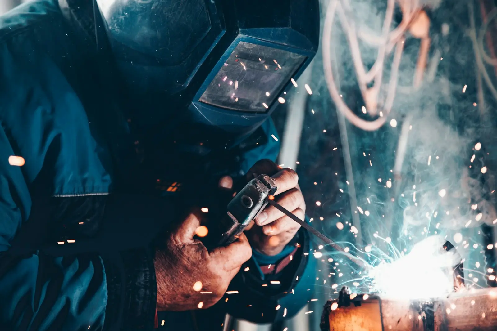
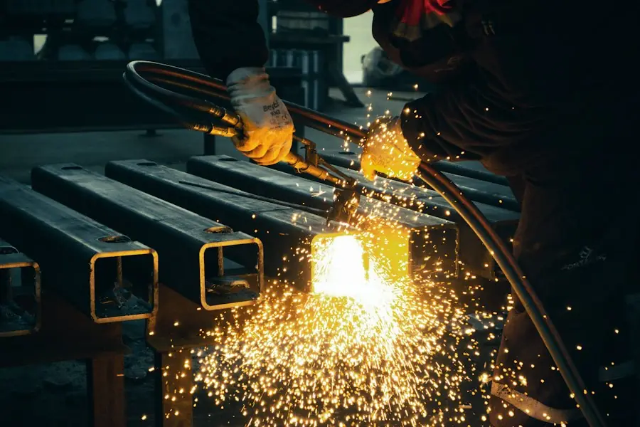
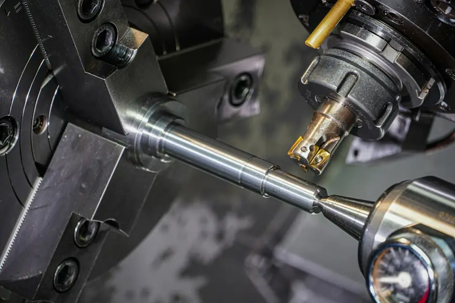

レーザー切断・抜き
薄板から厚板まで、図面データからそのまま切り出します。穴・切り欠きの多い部品も得意です。
- 板厚0.5〜12mm
- 最大寸法3,000×1,500mm

薄板のレーザー切断から曲げ・溶接・組立まで、社内で一貫して加工します。量産前の試作、治具、装置カバーなど、数量が少ない仕事ほどお任せください。


工程を外に出さないので、図面の確認から納品までの窓口は1つ。途中の仕様変更にも、その日のうちに答えられます。
薄板から厚板まで、図面データからそのまま切り出します。穴・切り欠きの多い部品も得意です。
ベンダーで箱曲げ・Z曲げ・ヘミングまで。曲げ順と寸法の逃げを、図面段階からご提案します。
TIG・半自動・スポット溶接に対応。ひずみ取りと焼け取り、ヘアライン仕上げまで社内で行います。
代表的な材質のみ載せています。表にない材質・板厚も、図面をお送りいただければ加工できるかお答えします。
| 材質 | 板厚 | 切断 | 曲げ | 溶接 |
|---|---|---|---|---|
| SPCC（冷間圧延鋼板） | 0.5〜3.2mm | ◎ | ◎ | ◎ |
| SS400（一般構造用鋼） | 3.2〜12mm | ◎ | ○ | ◎ |
| SUS304（ステンレス） | 0.5〜6mm | ◎ | ◎ | ◎ |
| A5052（アルミ） | 0.8〜5mm | ○ | ○ | △ |
| SECC（電気亜鉛めっき鋼板） | 0.6〜2.3mm | ◎ | ◎ | △ |
ほか、SPHC・SUS430・C1100（銅）など全12種に対応。材質の一覧を見る
手書きの図やポンチ絵からでも始められます。データ形式は DXF・DWG・PDF・STEP に対応しています。
お客さまの工程で何が変わったかを中心にご紹介します（数値は見本です）。
検査装置のフレームを、曲げで形を作ってから溶接点を減らす設計に変更しました。
ライン改造用の受け治具を、図面のやりとり2回で仕上げて納品しました。
持ち運び用の測定器カバーを、曲げ＋リベット留めで軽く仕上げました。
原則2営業日以内に、加工方法・単価・納期をお返事します。
お電話でのご相談（平日 8:30〜17:30）000-0000-0000（架空）
はい。手書きのスケッチや現物の写真、寸法のメモからでもご相談いただけます。こちらで加工用の図面を起こす場合は、作図費（1点 5,000円〜・見本）をいただきます。
段取りの費用がかかるため、1個あたりの単価は数量が多い場合より上がります。見積では1個・5個・10個など数量別の単価もあわせてお出しできます。
協力工場での表面処理（焼付塗装・亜鉛めっき・アルマイトなど）を手配し、一括で納品します。処理の分だけ納期が3〜5営業日ほど延びます。
図面のやりとりはメールとフォームで完結し、全国へ運送便で出荷しています。送料は見積に含めてお知らせします。